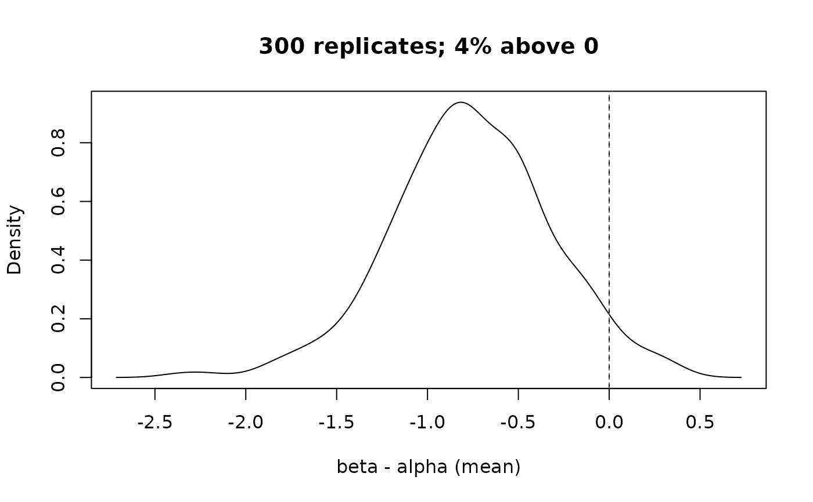

The bootstrap distribution behind a group difference
Source:R/ilm_plot_multi.R, R/zzz-iml-aliases.R
ilm_plot_boot_diff.RdDraws the replicate differences from one row of an ilm_boot_diff() result,
with zero and the interval marked. The summary says where the difference is;
this says what the resampling actually produced – whether it is symmetric,
skewed, or piled against a boundary, which the interval alone cannot show.
Usage
ilm_plot_boot_diff(
x,
row = 1L,
type = c("density", "histogram"),
ref_line = 0,
...
)Arguments
- x
An
ilm_boot_diff()result.- row
Which comparison to draw, when the result has several. The default draws the first, and having more than one is normal now that
ilm_boot_diff()compares every pair.- type
"density"or"histogram".- ref_line
Where to draw the reference line.
- ...
Passed to
tinyplot::tinyplot().
Examples
d <- ilm_sim()
b <- ilm_boot_diff(d, "score", "grp", R = 300, seed = 1)
ilm_plot_boot_diff(b, row = 1)
